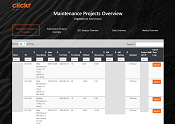
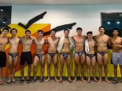

Shawn Lee
Hi there! I am currently completing a Bachelor's Degree in Computer Science at the National University of Singapore, specialising in software engineering and computer security. My eventual career goal is to become a software engineer, with a longer-term aspiration of moving into management.
Education
 National University of Singapore
National University of Singapore
Raffles Institution
Subjects taken: General Paper, Biology, Chemistry, Mathematics, Economics, Mother Tongue (Mandarin), Project Work
Skills
Visual Studio Code • ReactJS • Node.js • MongoDB • IntelliJ • Android Studio • Firebase • Selenium • JavaFX/FXML • Gradle • CI/CD • AdobeXD • WordPress • MYSQL
Git • GitHub • BitBucket • SourceTree
Projects
Athletick
[Personal Project Portfolio] [User Guide] [Developer Guide] [Product Pitch & Demo Slides] [GitHub]
Athletick is a team management desktop application for coaches and team captains of timing-based performance sports. Athletick provides them with athlete information managing, attendance tracking and performance monitoring. This enables them to better manage their team, plan for trainings and prepare for upcoming competitions. Athletick was developed alongside 4 other computer science students from the National University of Singapore as part of a requirement for our second-year software engineering module, CS2103T.
Major Contributions:
- Contributed calendar feature to the app which provides 2 main functions:
- Displays an overview of training and performance records in a selected month
- Displays training and performance records entered on a specific date
- Served as the team’s Integration Engineer, ensuring all features are integrated together smoothly for each project milestone submission
- Designed the final product using AdobeXD and implemented it using SceneBuilder
Main Takeaways:
- Software engineering in a team where we conceptualise and implement enhancements to a given product as well as to prepare it to be continued by future developers
- Preparing various types of professional technical documentation suitable for different audiences (e.g. User Guide, Developer Guide)
- Team meeting skills & oral presentation skills (e.g. Pitch, Product Demo
Technologies used: Java, JavaFX, TestFX, FXML, Gradle, Travis (CI/CD), SceneBuilder, AdobeXD
PayWhere 
PayWhere is an Android application that helps mobile payment users to find suitable dining outlets in shopping centres by displaying those that accept their preferred mobile payment platforms.
PayWhere contains all the information you need to dine and make payment easily, so you don't have to trawl through multiple websites.
{kind=link}
PayWhere was developed over the summer for NUS Project Orbital. My partner, Dominique Ng and I were awarded Apollo 11, which is the highest level of achievement in this module for displaying strong evidence of project management, user testing and source code control.
Technologies used: Java & XML (Android Studio), Python (Web-Scraping using Selenium)
Trackr
Trackr is a desktop application that helps you to manage tasks. Trackr is optimized for users who prefer to work with a Command Line Interface (CLI) while still having the benefits of a Graphical User Interface (GUI).
Technologies used: Java, JavaFX, FXML, Gradle, Travis (CI/CD), SceneBuilder
Leadership & Experiences
 Full-Stack Developer Intern
Full-Stack Developer Intern
[Final Report] [Presentation Slides]
DBS Bank Ltd is a Singapore multinational banking and financial services corporation that was established on 16 July 1968 and is headquartered in Marina Bay, Singapore. Over the years, DBS has continued to innovate and adapt to technological disruption, enabling her to be recognised as the World’s Best Digital Bank. Since its establishment, DBS has expanded into 18 markets across the globe with over 280 branches (DBS, 2018). This includes 6 priority markets in Asia, namely Singapore, Hong Kong, China, India, Indonesia and Taiwan.
During my full-time summer internship, I was attached to the Technology Service department under the Technology and Operations business function. My team was responsible for the development and support for CUS related application development work, which is critical especially during the Covid-19 pandemic, as most employees depend on collaborative services to work with one another while working from home.
During my internship, the team was working on a web application to monitor the availability and performance of CUS such as Microsoft OneDrive and SharePoint, as well as mobile services such as BlackBerry Work. The application relies on the use of bots to test variables such as login time, upload/download speed to determine the availability and performance of the services. In addition, the web application allows different departments to keep track of relevant metrics such as the breakdown of the number of company issued mobile devices by country and application utilisation percentage by displaying the data in the form of graphs and charts.
Major Tasks:
- Created RESTful API using Node.js for bots developed by colleagues to upload performance data to the MongoDB database. API also allows data to be downloaded to be displayed using Highcharts on the React front-end
- Created RESTful API using Node.js for upload ad download of metrics data to MongoDB database
- Test APIs extensively using Postman
- Integrate APIs with React front-end using axios
- Integrate TinyMCE WYSIWYG HTML editor onto React front-end for users to directly alter HTML content on front-end
- Presented completed work to colleague taking over the project, ensuring a proper handover process at the end of my internship
Minor Tasks:
- Port data from old to new MongoDB database
- Worked together with fellow intern to create API documentation
- Integrated SonarQube (static analysis to detect bugs and vulnerabilities) and NexusIQ (detect security vulnerabilities) into Jenkins pipelines via groovy script
Note: Screenshots are unpopulated with data for data privacy reasons.
{kind=link}
{kind=link}
{kind=link}
{kind=link}
{kind=link}
{kind=link}
{kind=link}
Full-Stack Web Developer Intern
Clickr Media is an Internet marketing consultancy. I interned in the tech department and was primarily involved in web development. On top of implementing client specifications, I was heavily involved in an individual internal project. I started part-time in October and November and transitioned to full-time during the winter break.
My task was to create a project and employee work hours management site to help project managers keep track of deadlines and hours expended for the projects under their charge. Additionally, project managers are also able to retrieve work hours clocked by each employee to ensure that all work is accounted for. They are also able to export project and work hours reports in the form of an excel sheet for easy dissemination. Finally, the site also sends out a task reminder to project managers' emails whenever a project is due in a few days.
My project has significantly improved internal processes of Clickr by automating the tracking process. Previously, many of these processes were handled via Google Sheets and there was a lack of automated reminders and updates. I have also incorporated the jquery plugin, DataTables, for fast retrieval and sorting of information.
Major Tasks:
- Created project and employee work hours management site using HTML, CSS, JavaScript, PHP, SQL & WordPress to improve project billing in the company amounting to thousands of dollars in revenue
- Implemented DBS supplier portal using HTML, CSS & JavaScript based on AdobeXD design provided by DBS, paying close attention to the look and feel of the website
- Created a Developer Guide and briefed person taking over the project, ensuring a proper handover process at the end of my internship
Minor Tasks:
- Website maintenance for clients such as DBS, DHL, Blackmores, K W Ong Breast Clinic and more
- Data migration for DBS media site

{kind=link}
{kind=link}
{kind=link}
{kind=link}
{kind=link}
{kind=link}
Vice-Captain
During my first year as a freshman in NUS, I won first place in the NYSI and SUNIG competitions, and first runner-up in NUS Open. I also had the opportunity to represent NUS overseas in the Panasonic 20th Asia Pacific Water Polo Tournament held in Hong Kong, where we faced national and state teams from Australia, Philippines and China.
My commitment to the team, coupled with my playing ability, resulted in my appointment as vice-captain in my sophomore year. As vice-captain, I am responsible for the management of team morale and ensuring a high quality of training. Moreover, I am involved in the organising of competitions and hosting of foreign teams. Recently, we hosted The Hong Kong Polytechnic University (PolyU), and I liased with the NTU team to organise a tournament, providing a good training experience for the PolyU team.
During my term as vice-captain thus far, I have been successful in leading the team to a first place finish in the NYSI competition. My captain and I aim to have a clean sweep of first positions in every tournament the team plays in during our term as leaders.
{kind=link}
{kind=link}
{kind=link}
{kind=link}
{kind=link}
{kind=link}

{kind=link}
 Reservation Officer
Reservation Officer
{kind=link}
 Officer of Singapore Armed Forces
Officer of Singapore Armed Forces
{kind=link}
{kind=link}
{kind=link}

{kind=link}
Awards
- 1st Place - National University of Singapore - 2019 SUNIG Water Polo
- 1st Place - National University of Singapore - 2019 NYSI IHL Water Polo
- 1st Place - National University of Singapore - 2019 NYSI IHL Water Polo
- 1st Place - National University of Singapore - 2018 SUNIG Water Polo
- 2nd Place - National University of Singapore - 2018 NUS Open Water Polo
- 1st Place - National University of Singapore - 2018 NYSI IHL Water Polo
- 1st Place - National University of Singapore - 2018 Inter-Hall Games Swimming (Men's)
- Commander Coin - Basic Military Training Centre - 2017
- SkillsFuture SG - WSQ Advanced Certificate in Team Leadership 2016
- 2nd Place - Raffles Institution - A Division Men's Water Polo 2015